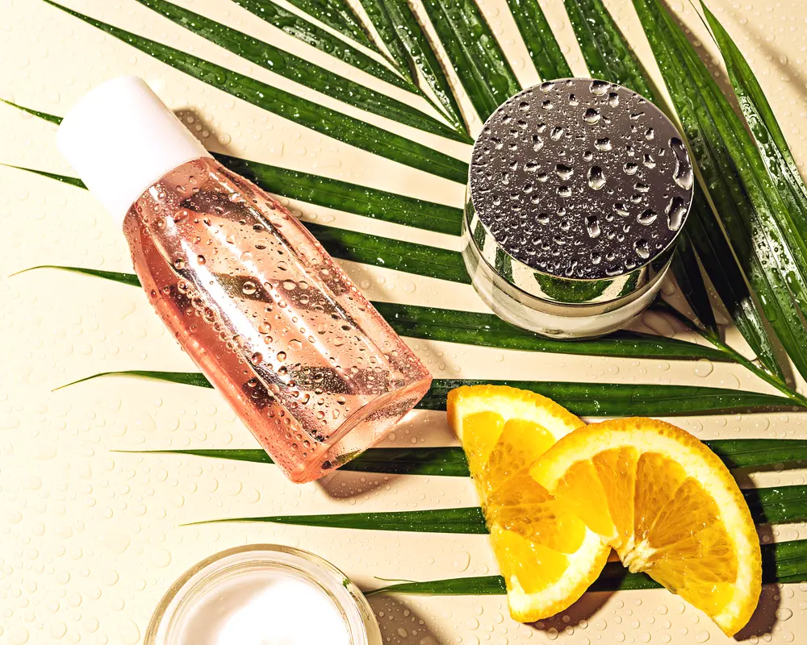

Chemical Peel vs Microneedling: Which One Should You Start With?
Two of the most popular skin treatments, and people constantly mix them up or assume they compete. They do not really compete. They fix overlapping problems in completely different ways, and the right first step depends on what is actually bothering you.

If you have been researching how to smooth texture, fade discoloration, or freshen dull skin, these two names come up again and again. The confusion is understandable, because their end goals sound similar. But the how is the whole story here, and once you see the difference, choosing between them gets a lot easier.
How each one works
A chemical peel works from the top down. A solution is applied to your skin to loosen and remove the outer layers of dead and damaged cells. As that old surface sheds, fresher skin underneath is revealed, and your body is nudged to renew. Peels come in light, medium, and deep strengths, which is why the experience ranges from a mild refresh to a serious resurfacing.
Microneedling works from the inside out. Instead of removing a layer, it uses tiny needles to create controlled micro-injuries that trigger your skin to produce new collagen and elastin as it repairs. This process is often called collagen induction therapy, which is a fitting name because the needles themselves are not the point. The healing response they set off is.
What each is best at
This is where the choice starts to make itself. The two treatments have strengths that lean in different directions.
- Chemical peels shine for surface issues: dullness, uneven tone, sun spots and discoloration, clogged or congested skin, and overall glow. Because they work on the surface, they are great at brightening.
- Microneedling shines for structural issues: fine lines, rough or bumpy texture, enlarged-looking pores, and certain acne scars, especially shallow ones. Because it builds collagen, it works on how firm and smooth the skin feels.
There is real overlap, and plenty of people benefit from both over time. But if you had to name your single biggest concern, that concern usually points clearly at one or the other.
The downtime difference
Downtime depends heavily on intensity, but the general shape looks like this. A light chemical peel might leave you a little pink and flaky for a few days as the old skin sheds. Deeper peels involve more visible peeling and more recovery time. The tradeoff is that stronger peels do more in one go.
Microneedling typically leaves your skin red and warm, like a mild sunburn, for a day or two, sometimes with a little flaking as it turns over. Neither treatment is a walk out glowing on the spot situation. Both ask for a bit of patience and good sun protection while your skin settles.
Which should you start with?
Start with the one that matches your top complaint. If your skin looks dull, blotchy, or spotted and you want brightness, a light peel is a gentle, satisfying first step. If your concern is texture, fine lines, or scarring, microneedling is aimed right at that.
Two more things worth saying. First, start gentle either way. There is no prize for jumping to the most aggressive version on your first try. Second, both treatments reward a series rather than a single visit, so think of your first appointment as the beginning of a short plan, not a one-time fix.
The takeaway
Chemical peels and microneedling are not rivals. They are two different tools for two overlapping jobs. Peels renew the surface and are your friend for tone and glow. Microneedling rebuilds from within and is your friend for texture and firmness. Figure out what bothers you most, start with the gentler version of the treatment that targets it, and bring the question to a consultation. A good provider will happily tell you which one fits your skin and your goals, and sometimes the answer is a thoughtful combination down the road.